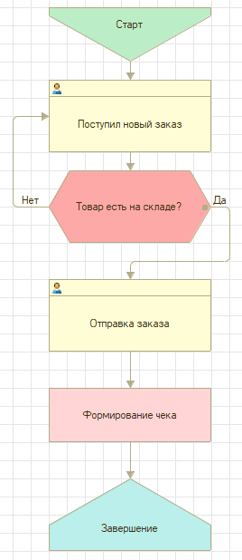
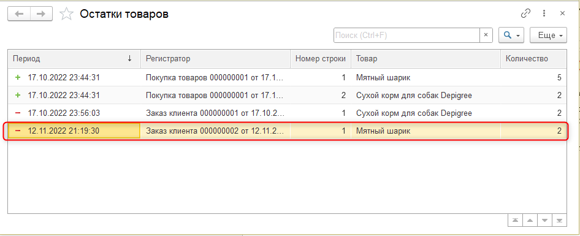

|
|
Рис. 5.7. Сервис и настройки |
Рис. 5.8. Открытие регистра накопления в пользовательском режиме |
Тема этого занятия – реализация учета остатков товарных позиций.
В рамках этого занятия выполним 2 задачи:
В рамках первой задачи мы создадим регистр накопления.
Регистр накопления – это механизм, позволяющий накапливать числовые значения. Например, количество товара на складе, количество денег, оставшихся в кармане. |
Добавим новый регистр накопления, нажав правой кнопкой мыши по ветке "Регистры накопления" и выбрав "Добавить". Имя регистра накопления – "ОстаткиТоваров", вид регистра – "остатки" (рис. 5.1).
Рис. 5.1. Регистр накопления "ОстаткиТоваров"
Регистр накопления вида "остатки" позволяет фиксировать данные и о поступлении (со знаком плюс), и о расходе (со знаком минус). |
Регистр накопления "Остатки товаров" будет фиксировать как пополнение количества товаров через событие "Покупка товаров", так и расход через событие "Заказ клиента".
Перейдем на вкладку "Данные", чтобы определить структуру механизма. Для начала определим ресурс.
Ресурс – это числовое значение, которое увеличивается, если происходит пополнение товаров, и уменьшается, если происходит продажа товара. |
Ресурс – числовое значение, следовательно, будем считать количество товарных позиций. Добавим новый ресурс. Имя ресурса – "Количество", тип – "число", длина – 10, точность – 0, неотрицательное (рис. 5.2).
Рис. 5.2. Добавление ресурса "Количество"
В данном случае галочка "неотрицательное" нужна для того, чтобы нельзя было фиксировать покупку или продажу отрицательного количества товаров. Действительно, ведь теряется смысл: продавая отрицательное количество товара, оно будет увеличиваться на складе.
Если оставить структуру регистра в таком варианте, будет невозможно определить, для какого именно товара зафиксировано данное количество. Для того чтобы фиксировать эту информацию, необходимо добавить "Измерение".
Измерение – это то, в разрезе чего мы храним и вычисляем ресурсы. |
Добавим измерение. Имя измерения – "Товар", тип – "СправочникСсылка.Товары", запрет незаполненных значений (рис. 5.3).
Рис. 5.3. Добавление измерения "Товар"
Без галочки "Запрет незаполненных значений" для системы будет нормой записывать информацию по количеству без указания конкретного товара.
Если сейчас обновить конфигурацию базы данных, то возникнет ошибка "Ни один из документов не является регистратором для регистра" (рис. 5.4).
Рис. 5.4. Ошибка при обновлении конфигурации базы данных
Необходимо указать, какой документ является регистратором для регистра, так как в регистр накопления информация должна попадать из документов, которые фиксируют события.
Перейдем на вкладку "Регистраторы", чтобы указать документы "Покупка товаров" и "Заказ клиента", информация из которых будет записываться в регистр накопления (рис. 5.5).
Рис. 5.5. Выбор регистраторов для регистра
Оба документа являются регистраторами для регистра. Документ "Покупка товаров" совершает движения со знаком плюс, поскольку он фиксирует закупку товара, а документ "Заказ клиента" – со знаком минус, поскольку он фиксирует продажу товара клиенту.
Обновим конфигурацию базы данных и запустим пользовательский режим. Сейчас никаких ошибок возникать не будет.
В пользовательском режиме созданный ранее регистр накопления "ОстаткиТоваров" не отобразился (рис. 5.6).
Рис. 5.6. Пользовательский режим
Дело в том, что пользователь не должен работать с этим регистром напрямую, так как данные в него будут записываться автоматически при проведении документа, но возможность посмотреть на него имеется.
Откроем раздел "Сервис и настройки" и в выпадающем списке выберем "Функции для технического специалиста" (рис. 5.7).
С помощью функций для технического специалиста можно получить доступ ко всем объектам, которые есть в программе. В том числе и к регистру накопления "Остатки товаров".
В открывшемся окне нажмем на плюсик рядом с регистрами накопления, чтобы развернуть список. Далее необходимо открыть регистр, нажав по его названию два раза левой кнопкой мыши (рис. 5.8).
|
|
Рис. 5.7. Сервис и настройки |
Рис. 5.8. Открытие регистра накопления в пользовательском режиме |
Сейчас таблица регистра накопления пустая, поскольку в нее информация не поступает (рис. 5.9).

Рис. 5.9. Таблица регистра "Остатки товаров"
Информация в эту таблицу должна поступать в тот момент, когда один из документов регистраторов фиксируется в системе, то есть проводится.
Откроем документ "Покупка товаров" и нажмем на кнопку "Купить" (рис. 5.10).
Рис. 5.10. Повторная регистрация покупки товаров
Это действие позволит повторно зарегистрировать событие покупки. Но даже сейчас в регистр соответствующие данные не попадут, поскольку не настроены правила движения информации.
Вновь отроем таблицу регистра накопления, чтобы убедиться в этом.
Чтобы открыть ее повторно, нажмем на "Сервис и настройки", далее выберем "Функции для технического специалиста" и в появившемся окне со списком объектов выберем регистр накопления "Остатки товаров" (рис. 5.11 – 5.13).
|
|
Рис. 5.11. Сервис и настройки |
Рис. 5.12. Открытие регистра накопления в пользовательском режиме |
Рис. 5.13. Таблица регистра "Остатки товаров"
Данные в регистр могут записываться только из документов, вручную пользователь не может их внести. Следовательно, нужно определить правила движений информации для документов "Заказ клиента" и "Покупка товара".
Закроем пользовательский режим и вернемся в конфигуратор.
Сначала обратимся к документу "Покупка товаров". Откроем окно редактирования данного документа и перейдем на вкладку "Движения" (рис. 5.14).
Рис. 5.14. Вкладка движения документа "Покупка товаров"
На этой вкладке можно убедиться, что документ связан с регистром "Остатки товаров" (рис. 5.15).
Рис. 5.15. Проверка связи между документом и регистром
Благодаря тому, что связь установлена, можно воспользоваться конструктором движений.
Конструктор движений – это инструмент платформы, который позволяет подготовить программный код автоматически.
Нажмем на кнопку "Конструктор движений", чтобы перейти к настройке (рис. 5.16).
Рис. 5.16. Переход к конструктору движений
Нажимаем на кнопку – отрывается отдельное окно, состоящее из трех частей (рис. 5.17).
Рис. 5.17. Конструктор движения регистров
Слева вверху отображается регистр, в который совершается движение информации. В данном случае это – регистр накопления "Остатки товаров". Также рядом с названием регистра отображается плюс, что означает, что информация идет со знаком плюс – фиксируется приход. Изменить тип движения регистра можно ниже, указав отличный тип движения регистра. Поскольку работа идет с документом "Покупка товаров", данную настройку изменять не будем.
Справа вверху отображается структура документа, а именно "Дата", "Номер" и "Итоговая сумма". Но это не все реквизиты, которые есть в документе. Информация о товаре и его количестве фиксируется в табличной части.
Выберем табличную часть в списке (рис. 5.18).
Рис. 5.18. Выбор табличной части "Товары"
Набор реквизитов документа увеличивается. Теперь отображаются "Номер строки", "Товар", "Цена", "Количество" и "Сумма".
В нижней части отображается структура регистра, а именно измерение "Товар" и ресурс "Количество".
Если сфокусироваться на одном из этих полей, то система будет подсказывать с помощью зеленой галочки, данные из какого поля, предположительно, туда нужно отправить (рис. 5.19).
Рис. 5.19. Подсказка при сопоставлении полей и реквизитов
Галочка появляется благодаря тому, что совпадают типы данных. В данном случае и реквизит, и измерение имеют тип "СправочникСсылка.Товары".
Если галочка отсутствует – типы отличаются. |
Если у полей и реквизитов документа совпадают не только типы данных, но еще и имена, то можно воспользоваться автоматическим заполнением колонки "Выражение". |
Нажмем на кнопку "Заполнить выражения", чтобы данные в пустой колонке заполнились автоматически (рис. 5.20).
Рис. 5.20. Автоматическое заполнение колонки "Выражение"
Информация в нижней таблице будет читаться следующим образом: информация по товару в регистр попадает из табличной части документа как "ТекСтрокаТовары.Товар", а по количеству – как "ТекСтрокаТовары.Количество".
Оба поля настроены. Нажмем на кнопку "Ок" (рис. 5.21).
Рис. 5.21. Завершение работы с конструктором движения
В результате открывается программный код, расположенный в модуле объекта документа "Покупка товаров".
|
В модуле объекта описывается программная логика отдельно взятого документа. |
Ранее в данном модуле уже был описан обработчик "ПередЗаписью" для подсчета итоговой суммы по документу.
Кроме события "ПередЗаписью" у документа есть событие "Проведение". Это событие означает, что документ принят к учету, событие, которое он регистрирует, произошло.
Аналогичную конструкцию необходимо реализовать для второго документа – "Заказ клиента", в котором будет регистрироваться движение со знаком минус, потому что заказ клиента – это продажа, расход товара со склада.
Закроем модуль объекта и окно редактирования документа "Покупка товаров" и откроем окно редактирования документа "Заказ клиента".
Необходимо выполнить аналогичные действия. Перейдем на вкладку "Движения" и нажнем на кнопку "Конструктор движения", чтобы сформировать логику записи данных в регистр накопления из документа "Заказ клиента" (рис. 5.22).
Рис. 5.22. Переход к конструктору движений
Перед тем как заполнять выражения, важно вспомнить, что работа идет с документом "Заказ клиента", следовательно, необходимо изменить тип движения (рис. 5.23).
Рис. 5.23. Изменение типа движения
Далее необходимо нажать на кнопку "Заполнить выражения".
Поля можно проставить и вручную. Например, чтобы выставить значение для поля "Количество", необходимо сфокусироваться в колонке "Выражение" напротив нужного поля. После этого система сама предложит подходящие варианты, в данном случае это – "Цена", "Количество" и "ИтоговаяСумма", они будут выделены зеленой галочкой. Дважды нажмем на поле "Количество", чтобы оно подставилось в нужную ячейку (рис. 5.24). После этого нажмем на кнопку "Ок" (рис. 5.25).
Рис. 5.24. Ручное заполнение выражения |
Рис. 5.25. Завершение работы с конструктором движений |
В результате получим аналогичный программный код, за исключением того, что вид движения – расход, а также отсутствует цикл, поскольку в этом документе нет табличной части.
Обновим конфигурацию базы данных и запустим пользовательский режим.
Перейдем к списку документов "Покупка товаров" и повторно проведем созданный ранее документ, так как запись в регистр попадает только при проведении документа.
Если документ уже был проведен ранее, то его можно перепровести. Например, нажав по нему правой кнопкой мыши, далее в выпадающем списке нужно выбрать "Провести" (рис. 5.26).
Рис. 5.26. Перепроведение документа "Покупка товара"
Документ заново провелся. Поступим аналогичным образом с документом "Заказ клиента".
Перейдем к списку заказов клиента, нажмем правой кнопкой мыши по созданному ранее документу и в списке выберем "Провести" (рис. 5.27).
Рис. 5.27. Перепроведение документа "Заказ клиента"
Проверим данные в регистре "Остатки товаров". Для этого необходимо нажать на "Сервис и настройки", далее выбрать "Функции для технического специалиста" и в появившемся окне со списком объектов выбрать регистр накопления "Остатки товаров" (рис. 5.28 – 5.29).
|
|
Рис. 5.28. Сервис и настройки |
Рис. 5.29. Открытие регистра накопления в пользовательском режиме |
В результате в таблице регистра накопления отобразилась информация о покупке пяти мятных шариков и двух упаковок сухого корма для собак, а также расход двух единиц товара "Сухой корм для собак" (рис. 5.30).
Рис. 5.30. Таблица регистра "Остатки товаров"
Благодаря регистру накопления можно понять, что "Сухой корм для собак" на складе закончился, а "Мятные шарики" еще есть.
Таким образом, система была подготовлена для реализации механизма контроля отрицательных остатков.
Вторая задача, которую необходимо решить, сводится к тому, чтобы автоматизировать создание документа "Заказ клиента". Документ должен создаваться в тот момент, когда появляется новый заказ. Это необходимо для того, чтобы при выполнении заказа купленный товар списывался со склада.
Закроем пользовательский режим и вернемся в конфигуратор.
Для реализации автоматического создания документа необходимо изменить карту маршрута бизнес-процесса.
Чтобы внести изменения в карту маршрута, необходимо перейти на вкладку "Прочее" в окне редактирования бизнес-процесса и нажать на кнопку "Карта маршрута" (рис. 5.31).

Рис. 5.31. Открытие карты маршрута бизнес-процесса
На карте маршрута необходимо определить следующую логику: если товар есть на складе, то заказ отправляется покупателю. После этого необходимо программно создать документ "Заказ клиента", который израсходует товарные позиции со склада, указанные в заказе.
Для этого необходимо добавить еще один этап между отправкой заказа и завершением бизнес-процесса. Для удобства отправку заказа и завершение можно друг от друга отдалить (рис. 5.32).
Рис. 5.32. Фрагмент карты бизнес-процесса
Следующим этапом необходимо добавить элемент "Точка обработки".
Точка обработки нужна, чтобы определить события, обработать программные действия. |
В рамках данного примера будет реализована обработка программного создания документа "Заказ клиента".
Добавим точку обработки на карту маршрута рядом с оформлением заказа и точкой завершения бизнес-процесса. Имя точки обработки – "ФормированиеЧека" (рис. 5.33).
Рис. 5.33. Добавление точки обработки
Далее требуется изменить порядок следования линий. Чек будет формироваться после отправки заказа, следовательно, линия, выходящая из точки действия "Отправка заказа", будет входить в точку обработки "Формирования чека".
Выберем линию, выходящую из "Отправки заказа", и, удерживая левую кнопку мыши, переместим стрелочку к точке обработки "Формирование чека" (рис. 5.34).
Рис. 5.34. Перенос линии
После этого передвинем точку "Формирование чека" и свяжем ее с точкой завершения бизнес-процесса (рис. 5.35).

Рис. 5.35. Итоговый вариант карты маршрута бизнес-процесса
|
Необходимо убедиться, что все стрелочки закрашены. Если это не так, нужно соединить линии таким образом, чтобы они следовали от одной точки к другой. |
Далее необходимо определить действие для точки обработки. Для этого откроем ее свойства и на вкладке "События" определим обработку через кнопку "Открыть" (рис. 5.36).
Рис. 5.36. Создание обработчика события для точки обработки
После нажатия на значок лупы откроется модуль объекта бизнес-процесса и создастся процедура "ФормированиеЧекаОбработка".
Прежде чем формировать чек, изменим логику первой процедуры, избавившись от случайности и реализовав возможность всегда продавать товарные позиции. Благодаря этим изменениям будет проще проверить функционал.
Закомментируем первые две строки программного кода. Это можно сделать с помощью команды "Добавить комментарий".
Выделим первые две строки и нажмем на кнопку "Добавить комментарий" (рис. 5.37).
Рис. 5.37. Комментирование первых двух строк процедуры
Поскольку программная логика опирается на анализ числового ответа, определим фиксированное значение для переменной "ЧисловойОтвет".
Поскольку переменная "ЧисловойОтвет" определяется впервые, если смотреть на модуль сверху вниз, подсказка работать не будет. Поэтому при написании данной переменной необходимо убедиться, что она написана один в один (рис. 5.38).
Рис. 5.38. Проверка имени переменной
Перейдем к написанию процедуры "ФормированиеЧекаОбработка". Поскольку чек выписывается покупателю, можно обратиться к реквизиту "Итог" и указать, что покупка прошла успешно.
Далее необходимо программно создать "Заказ клиента" и заполнить его полями. Чтобы программно создать экземпляр документа, потребуется сначала обратиться к механизму, который определяет элемент. Необходимо указать, с какой именно веткой конфигурации будет идти работа, далее выбрать конкретный объект и только потом указать, что именно нужно сделать.

Далее задача сводится к тому, чтобы заполнить документ значениями.
С помощью клавиши Tab можно сдвигать символы, присваивая и выравнивая их относительно друг друга. Это нужно для красоты кода и удобства его анализа.
После того, как содержимое документа было настроено программно, его необходимо записать.
Помимо того, что был реализован алгоритм программного создания документа, также были внесены изменения в реквизит "Итог" бизнес-процесса. Эти изменения необходимо зафиксировать.
Обновим конфигурацию базы данных и запустим пользовательский режим, чтобы проверить результат.
В качестве эксперимента удалим все этапы заказов. Для этого необходимо выделить все этапы, например, через сочетание клавиш Ctrl + A и нажать сочетание клавиш Shift + Delete, либо через кнопку "Еще" и "Удалить" (рис. 5.39).
Рис. 5.39. Удаление этапов заказа
Аналогичным образом удалим все "Заказы" (рис. 5.40).
Рис. 5.40. Удаление заказов
Теперь можно проверить работу описанного ранее механизма. Создадим новый заказ. В качестве товара укажем "Мятный шарик" по цене – 200, количество – 2, сумма – 400 (рис. 5.41).
В данный момент вся информация вносится вручную, но в дальнейшем система будет все рассчитывать автоматически, а также получать актуальную цену на товар.
После заполнения всех необходимых полей нажимаем на кнопку "Стартовать и закрыть" (рис. 5.42).
Рис. 5.41. Создание нового заказа |
Рис. 5.42. Старт нового бизнес-процесса |
После старта бизнес-процесса появляется задача, которую можно найти в списке "Этапы заказа". Выполним данный этап заказа (рис. 5.43).
Рис. 5.43. Выполнение этапа "Поступил новый товар"
Если вернуться к бизнес-процессу и обновить список, то можно увидеть, что заказ был отправлен на упаковку (рис. 5.44).
Рис. 5.44. Изменения в бизнес-процессе
Выполним следующий этап из списка "Этапы заказов" и отправим заказ покупателю (рис. 5.45).
Рис. 5.45. Выполнение этапа "Отправка заказа"
После выполнения данного этапа бизнес-процесс завершается. Если вернуться обратно к списку заказов и обновить его, то в "Итоге" заказа будет указана информация об успешном совершении покупки (рис. 5.46).
Рис. 5.46. Изменения в итоге заказа
Поскольку продажа была зафиксирована программно, система так же программно среагировала на то, что товарную позицию из заказа нужно списать. Проверим информацию в регистре накопления "Остатки товаров".
Откроем таблицу "Остатки товаров" через функции для технического специалиста (рис. 5.47).

Рис. 5.47. Таблица "Остатки товаров"
Действительно, информация о списании "Мятного шарика" в количестве двух штук отобразилась в регистре.
На этом пятое занятие окончено!
На этом занятии была реализована возможность автоматически фиксировать заказы клиентов, как только они возникают в системе, а также регистрацию списания и поступления товаров на склад магазина.
На следующем занятии мы приступим к реализации контроля остатков товаров на складе.
Это нужно запомнить |
|
|
Регистр накопления – это механизм, позволяющий накапливать числовые значения. Регистр накопления вида "остатки" позволяет фиксировать данные и о поступлении (со знаком плюс), и о расходе (со знаком минус). Ресурс – это числовое значение, которое увеличивается, если происходит пополнение товаров, и уменьшается, если происходит продажа товара. Измерение – это то, в разрезе чего мы храним и вычисляем ресурсы. Точка обработки нужна, чтобы определить события, обработать программные действия. |
Нужно доработать бизнес-процесс поступления заказов от покупателей таким образом, чтобы он подходил именно для вашего магазина. Например, можно добавить дополнительную проверку условия или добавить еще одну точку действия или обработки.